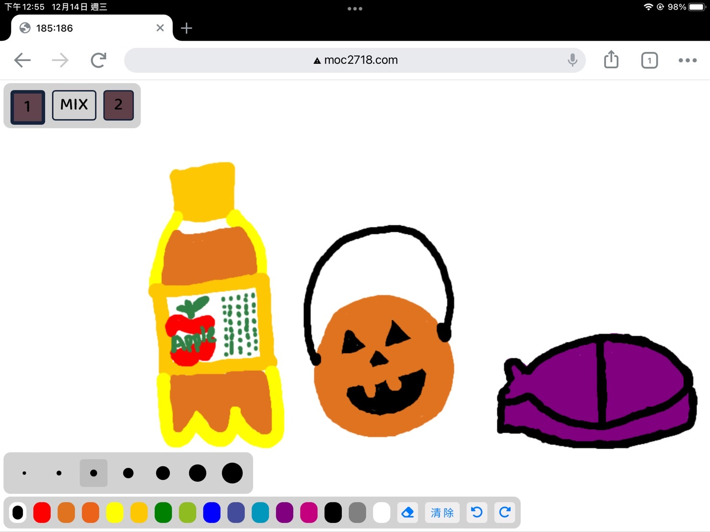

Assisted in building an interactive device connected to a tablet drawing webpage (MQTT), featuring color sampling with a sensor and color mixing through device motion.
Assembled the circuit board and completed soldering, then enclosed it within the casing.

Created a drawing web app prototype: sampled colors with the device and displayed them at the top-left corner; shaking the device mixed two colors and displayed the result in the “MIX” section, which could be directly selected for use.